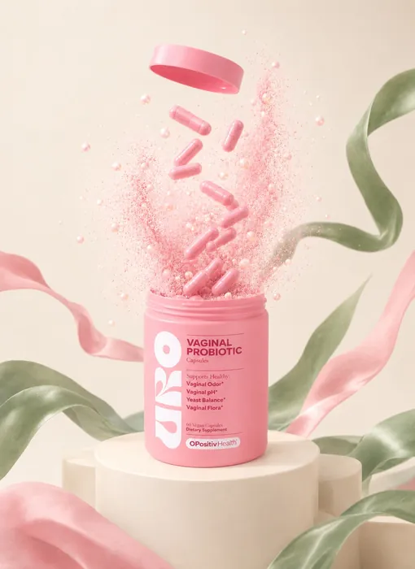

Probiótico Vaginal URO — O Positiv
Probiótico con 4 cepas de lactobacilos y prebióticos XOS, formulado para cuidar tu bienestar íntimo. Marca O Positiv, 100% original.

Beneficios de URO Probiótico Vaginal
- Flora íntima en equilibrio: formulado para apoyar el equilibrio natural de tu flora íntima.
- 4 cepas + prebióticos: Lactobacillus acidophilus, rhamnosus, reuteri y fermentum, con prebióticos XOS.
- Rutina sencilla: solo 2 cápsulas al día, sin refrigeración.
- Vegano y sin gluten: cápsulas vegetales, libre de transgénicos.
¿Cómo tomar URO?
Toma 2 cápsulas por vía oral, una vez al día, acompañadas con un vaso de agua. Guárdalo en un lugar fresco y seco. No necesita refrigeración.
¿Para quién es?
Mujeres adultas, también en la menopausia. Bienestar íntimo, natural y sin complicaciones.
Composición
Por porción (2 cápsulas): mezcla probiótica V-Positiv 50 mg (5 mil millones de UFC), con 4 cepas de Lactobacillus, más 400 mg de prebióticos XOS. 60 cápsulas veganas, 30 porciones (1 mes). 100% vegano, sin gluten, libre de transgénicos.
Precio de URO en México
Desde $479 MXN con envío gratis y pago contra entrega (pagas en efectivo al recibir). 100% original y sellado.
Envío gratis a todo México · Entrega en 3 a 7 días hábiles · Pago contra entrega.